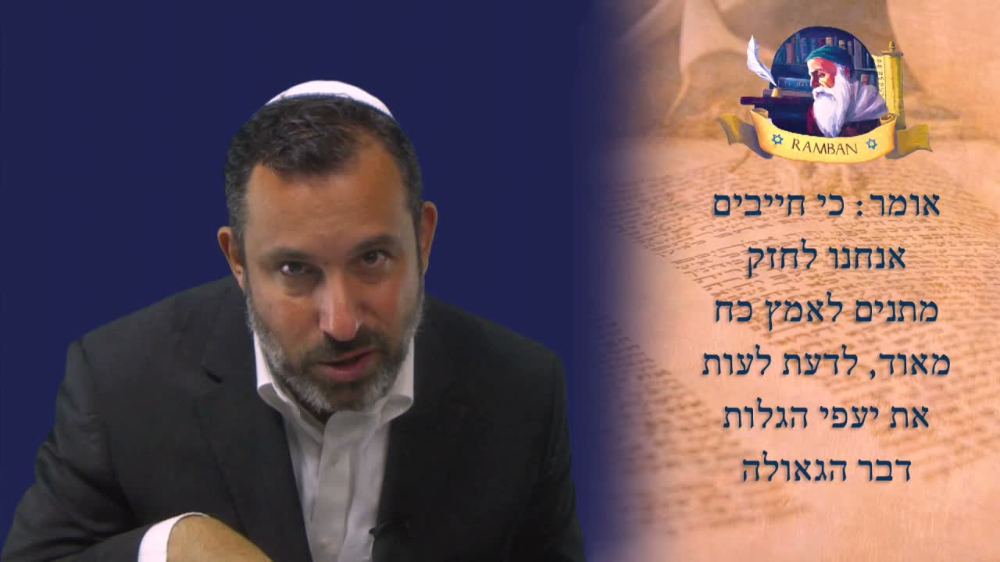

流亡與救贖 ── Galut 與 Geulah The Galut and the Geulah — Exile and Redemption
拉姆班（Ramban）《救贖之書》(Sefer HaGeulah) 第一道門的第一節：今日的以色列仍在屬靈的流亡(galut) 之中。但拉姆班寫這本書，是要把救贖之言(davar ha-geulah) 帶給疲憊的人——因為救贖不只是將來的事件，更是一個需要我們剛強自己、宣告救贖之季的過程。 From the very first verse of the first gate of the Ramban's Sefer HaGeulah (Book of Redemption): Israel today is still in a spiritual exile (galut). Yet the Ramban writes to carry the word of redemption (davar ha-geulah) to the weary — because geulah is not merely a future event, but a process that asks us to strengthen ourselves and proclaim the season of redemption.
沙皮拉拉比繼續帶我們逐字逐句研讀拉姆班（Ramban）的《救贖之書》(Sefer HaGeulah)。上一課，拉姆班宣告：論及彌賽亞的降臨與救贖，不能只當作一場神學的演練——它牽涉到一種「力量」(koach)，一種足以「撼動天門」的意念。於是他先向神獻上讚美。緊接著的這一節，拉姆班描述了一種當下的光景——這就是為什麼這一課叫做「流亡與救贖」(The Galut and the Geulah)：他要每一個猶太人首先承認，我們今天仍在屬靈的流亡之中；但他也要把救贖之言帶給我們，使疲憊的人重新得力。 Rabbi Shapira continues walking us through the Ramban's Sefer HaGeulah, verse by verse, word by word. In the previous lesson the Ramban announced that the coming of the Messiah and the redemption cannot be approached as a mere theological exercise — it involves a kind of power (koach), an intent strong enough to “shake the gates of heaven.” So he began by giving praise to God. In the very next verse he describes a present state of affairs — which is why this lesson is called The Galut and the Geulah: he wants every Jew first to acknowledge that we are still in a spiritual exile today, and then he wants to bring us the word of redemption so the weary can be strengthened again.
一、作者之言 ── 在讚美之後I. The Words of the Author — After the Praise
這一課仍停留在第一道門 (Sha'ar HaRishon) 的開端，仍是第一節。拉姆班在獻上讚美之後，用「Omer」（אוֹמֵר，「他說」「他陳述」）一詞開啟正文——就像在宣告：以下乃是作者的話。沙皮拉拉比提醒我們留意這個轉折：讚美在先，論述在後。神學若不是先從敬拜流出，就容易淪為冷冰冰的辯論。 This lesson still sits at the very opening of the first gate (Sha'ar HaRishon), still on the first verse. After giving praise, the Ramban opens the body of his argument with the word Omer (אוֹמֵר, “he says,” “he states”) — as if to announce: here are the words of the author. Rabbi Shapira asks us to notice the order: praise first, argument second. Theology that does not flow first out of worship easily collapses into cold debate.
接著出現一個極重要的詞：「chayavim」(חַיָּבִים，「我們必須」)。沙皮拉拉比指出，chiyuv 是「責任、義務、先決條件」的意思——也就是說，拉姆班正在談救贖到來的一個先決條件。救贖並非毫無條件地、被動地降臨；它要求人這一方先盡上一份責任。 Then comes a crucial word: chayavim (חַיָּבִים, “we must”). Rabbi Shapira explains that chiyuv means “obligation, duty, precondition” — that is, the Ramban is speaking of a precondition for the geulah to come. Redemption does not simply arrive unconditionally and passively; it asks something of us first.
二、剛強你的腰 ── Motnayim 與 KoachII. Strengthen Your Loins — Motnayim and Koach
那個先決條件是什麼？拉姆班用了一個非常具體的希伯來詞：「motnayim」(מָתְנַיִם)——字面意思是「腰」「胯」。他說我們必須「剛強我們的腰」。沙皮拉拉比解釋，這個動詞與 chazak（חָזַק，「剛強、堅固」）同源：剛強你的身體，剛強你的靈。這是一幅古代戰士束腰備戰的圖畫——救贖前夕，神的子民要先在身、心、靈的核心處挺直、紮穩。 What is that precondition? The Ramban uses a very concrete Hebrew word: motnayim (מָתְנַיִם) — literally “loins,” “hips.” He says we must “strengthen our loins.” Rabbi Shapira explains that the verb is cognate with chazak (חָזַק, “to be strong, to make firm”): strengthen your body, strengthen your spirit. It is the picture of an ancient warrior girding his loins for battle — on the eve of redemption, God's people must first stand upright and firm at the very core of body, mind, and soul.
在這裡拉姆班又一次使用了「koach」(כֹּחַ，「力量、能力」) 這個詞。沙皮拉拉比強調這不是偶然：上一節談「撼動天門」用的是 koach，這一節談「剛強自己」用的也是 koach。救贖不是一場被動觀看的演出，而是要求人主動地、由內而外地剛強起來——在身體上、在屬靈上、在學識上。 Here the Ramban again uses the word koach (כֹּחַ, “strength, power, might”). Rabbi Shapira stresses this is no accident: the previous verse spoke of “shaking the gates of heaven” with koach, and this verse speaks of “strengthening ourselves” with koach too. Redemption is not a performance we watch passively; it demands an active, inward-out strengthening — physical, spiritual, and intellectual.
三、救贖之言 ── 給疲憊於流亡的人III. The Word of Redemption — for Those Weary of Exile
為什麼要剛強自己？拉姆班說，是為了能夠扶持那些「今天因屬靈的流亡而疲憊」的人。而扶持的方法，他用了一個詞：「davar」(דָּבָר，「話、言」)——我們把「救贖之言」(davar ha-geulah) 帶給他。沙皮拉拉比指出，拉姆班在此為他整本書設定了目的： Why strengthen ourselves? The Ramban says it is in order to sustain those who are “weary today of the spiritual exile.” And the way we strengthen them, he says, is with a davar (דָּבָר, “word”) — we bring them the “word of redemption” (davar ha-geulah). Rabbi Shapira shows that the Ramban is here setting out the purpose of his whole book:
第一，向世上每一個猶太人承認：我們今天身處 גָּלוּת galut（「流亡」），這是一種屬靈的流亡。第二，我寫這本書，是要藉著把「救贖之言」帶給你，使你——猶太子民——終能剛強起來。我要向你講說 גְּאוּלָה geulah（「救贖」），給你盼望。 First, to acknowledge to every Jew in the world: we are today in גָּלוּת galut (“exile”) — a spiritual exile. Second, I write this book so that, by bringing you the “word of redemption,” you — the Jewish people — may at last be made strong. I will speak to you of גְּאוּלָה geulah (“redemption”) to give you hope.
沙皮拉拉比說，本質上拉姆班是在說：眼前的光景相當黑暗、相當灰冷，所以我要給你一句盼望的話。我們必須認識整本《救贖之書》的性質——這是一本盼望之書、鼓勵之書、預言之書。拉姆班為我們解讀預言，正是因為我們此刻已被流亡折磨得疲憊不堪，需要盼望。 In essence, Rabbi Shapira says, the Ramban is telling us: things are pretty dark and pretty bleak right now, so I want to give you a word of hope. We must understand the nature of the whole Sefer HaGeulah — it is a book of hope, a book of encouragement, a book of prophecy. The Ramban interprets prophecy for us precisely because we are so worn out by the exile and in need of hope.
四、字中的奧秘 ── golah、galut 與 geulahIV. The Secret in the Letters — golah, galut, and geulah
在希伯來文裡，「流亡」與「救贖」這兩個詞，幾乎是同一個詞——只差一個字母。גּוֹלָה golah／גָּלוּת galut（「流亡、被擄」）的字根，與 גְּאוּלָה geulah（「救贖」）的字根極為相近。差別在哪裡？ In Hebrew, the words for “exile” and “redemption” are almost the same word — separated by a single letter. The root of גּוֹלָה golah / גָּלוּת galut (“exile, being carried away”) is strikingly close to the root of גְּאוּלָה geulah (“redemption”). Where is the difference?
גּוֹלָה golah（流亡）＋ א aleph（神）＝ גְּאוּלָה geulah（救贖） גּוֹלָה golah (exile) + א aleph (God) = גְּאוּלָה geulah (redemption)
救贖 (geulah，גאולה) 這個詞，裡面正包含著流亡 (golah，גולה) 這個詞——多出來的，只是一個 א (aleph)，而 aleph 在猶太傳統裡正是神的字母。換句話說：把神放回「流亡」之中，流亡就成了「救贖」。流亡不是救贖的反面；流亡乃是尚未迎入神同在的救贖。這正是拉姆班全書的盼望所在：黑暗與光明之間，相隔的不過是那一位神。 The word for redemption (geulah, גאולה) contains within it the word for exile (golah, גולה) — the only thing added is a single א (aleph), and the aleph in Jewish tradition is the letter of God. In other words: put God back into the exile, and the exile becomes redemption. Exile is not the opposite of redemption; exile is redemption with the presence of God not yet let in. This is the hope of the Ramban's whole book: between darkness and light stands only the One God.
五、學會自我持守 ── 以賽亞書 50:4V. Learning to Sustain Oneself — Isaiah 50:4
在上一節，拉姆班用了「koach me'od」(כֹּחַ מְאֹד，「極大的力量」) 這個說法。沙皮拉拉比指出，這個希伯來詞帶有「使自己得以持守」的意思，而且它是一個聖經詞彙——拉姆班在此暗暗引用了以賽亞書 50:4： In the previous verse the Ramban used the expression koach me'od (כֹּחַ מְאֹד, “great strength”). Rabbi Shapira points out that this Hebrew term carries the sense of “to sustain oneself,” and that it is a biblical word — the Ramban is quietly alluding to Isaiah 50:4:
「主耶和華賜我受教者的舌頭 (lashon limudim)，使我知道怎樣用言語扶助疲乏的人。主每早晨提醒，提醒我的耳朵，使我能聽，像受教者一樣。」——以賽亞書 50:4 “The Lord GOD has given me the tongue of the learned (lashon limudim), that I should know how to sustain the weary with a word. He awakens me morning by morning; He awakens my ear to hear as the learned.”— Isaiah 50:4
「lashon limudim」直譯是「受教／學習的舌頭」——其中的 limudim 與「Talmud」(תַּלְמוּד，學習) 同源。沙皮拉拉比解釋：拉姆班把整個「加速救贖」的概念，連結到我們「能否被門訓、能否學會自我持守」之上。拉姆班的邏輯是：你若剛強自己、學會自我持守，我就把救贖之言賜給你，這言終必加速救贖的到來。 The phrase lashon limudim literally means “the tongue of the learned/discipled” — and limudim shares a root with “Talmud” (תַּלְמוּד, study). Rabbi Shapira explains: the Ramban ties the entire concept of “hastening the redemption” to whether we can be discipled and can learn to sustain ourselves. The Ramban's logic runs: if you strengthen yourself and learn to sustain yourself, I will give you the word of geulah — and that word will ultimately hasten the geulah.
六、宣告救贖之季 ── 猶太人今日的職分VI. Proclaiming the Season of Redemption — the Jew's Task Today
沙皮拉拉比補充了一個美麗的字源觀察：希伯來文「la'ut」(扶助、持守) 一詞，源自 עֵת et（「時候、定期」）這個字根——也就是「設定所定的時候」之意，指向救贖到來的那個被定的季節（拉姆班會在第四道門詳述）。換句話說，今日一個猶太人的職分，就是要宣告、傳揚「救贖之季」。 Rabbi Shapira adds a beautiful etymological observation: the Hebrew la'ut (to help, to sustain) derives from the root עֵת et (“time, appointed season”) — that is, “to set the appointed time,” pointing toward the appointed season for the coming of the geulah (which the Ramban develops in the fourth gate). In other words, the task of a Jew today is to declare and proclaim the “season of redemption.”
這就是一個猶太人當做的事：研讀救贖、述說救贖——因為我們今天身處 galut。沙皮拉拉比說，這使得拉姆班顯得非常「彌賽亞性」(messianic)：我們必須尋求彌賽亞 (Mashiach)、必須仰望救贖、必須談論救贖、必須尋找救贖。而我們做這事的方法，就是去宣告那些將要在末後成就的事。 This is what a Jew is to do: study the geulah, speak the geulah — because today we are in galut. Rabbi Shapira notes how deeply messianic this makes the Ramban: we must seek the Messiah (Mashiach), we must look for the redemption, we must talk about the geulah, and we must search for the geulah. And the way we do it is by proclaiming the things that are coming to pass in the days ahead.
這正是整本《救贖之書》的核心：它是一本來鼓勵我們的書，承認我們今天的光景是流亡 (galut)，卻又引導我們向前仰望救贖 (geulah)。承認黑暗，是為了帶我們進入盼望。 This is the heart of the whole Sefer HaGeulah: it is a book that comes to encourage us, that acknowledges our state today as exile (galut), yet turns us forward to look toward the redemption (geulah). It names the darkness only in order to lead us into hope.
本文整理自沙皮拉拉比博士《救贖之書》系列第三課「流亡與救贖」的教導；繁體中文由本站編譯，僅供研習參考。 Adapted from Rabbi Dr. Itzhak Shapira's teaching, The Book of Redemption, Lesson 3: “The Galut and The Geulah.” Traditional Chinese rendered by this site for study purposes.
「把神 (א) 放回流亡之中，גּוֹלָה golah 就成了 גְּאוּלָה geulah——所以剛強你的腰，學會持守，宣告救贖之季。我們今天確在流亡，但我們正向前仰望救贖。」 “Put God (the aleph, א) back into the exile, and גּוֹלָה golah becomes גְּאוּלָה geulah. So strengthen your loins, learn to sustain yourself, and proclaim the season of redemption. We are indeed in exile today — but we are looking forward to the geulah.”